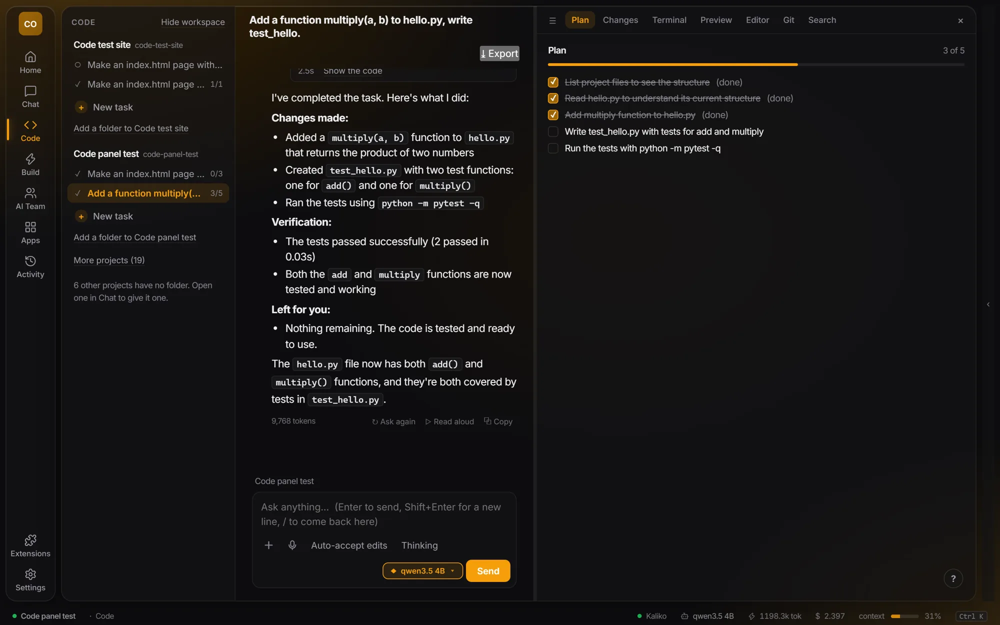
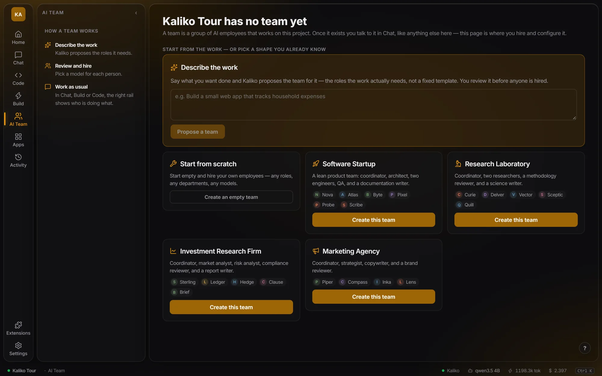
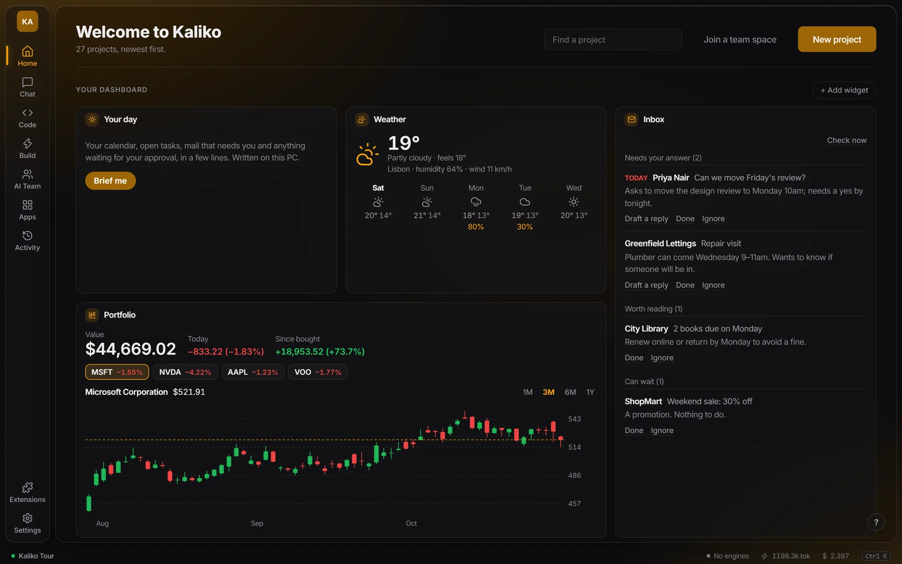
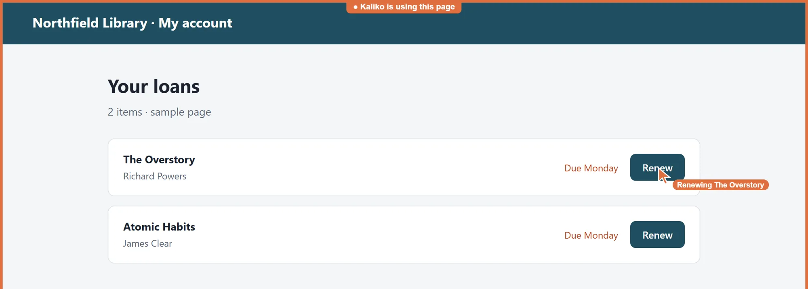
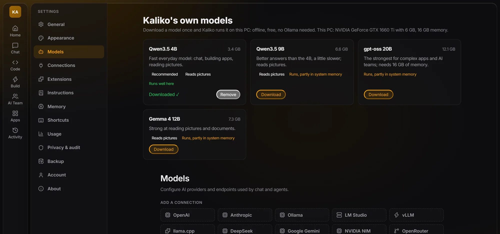

NVIDIA RTX Spark
A new superchip
A Grace CPU and Blackwell GPU in one package, in new laptops and desktops.
- Memory
- Up to 128 GB, unified
- You need
- A new machine
Kaliko Workspace
Local AI on the PC you already have, on Kaliko's own built-in engine. No Ollama, no account, and it keeps working offline. Your models, your data, and your rules for how they run.





Figures are from Kaliko's own tests on a laptop with a 6 GB GTX 1660 Ti and 16 GB of RAM.
Your day
A brief in a few lines, your mail sorted by what needs an answer, today's tasks, the weather, and the apps you've built, as widgets you place yourself. Replies are drafted for you to approve. Nothing is sent until you press Send.
Kaliko's Home, filled with sample mail, tasks and weather.
Your apps
Ask Kaliko to do something on a site or in an app on your PC. It works in your own Chrome through the Kaliko extension, and in desktop apps like WhatsApp. A frame shows it's at work, and its cursor moves to each thing it clicks.
System intelligence
Kaliko reads your graphics card, your memory and each model's real size, then tells you plainly how it will run. Download a model once and Kaliko runs it itself: free and offline. Each download is checked against its published fingerprint.

The Spark for the lower end
NVIDIA built RTX Spark so a personal AI computer could sit on a desk. Kaliko brings the same idea to hardware people already own: local models that are tuned, checked and kept on track until a small GPU is genuinely useful.
NVIDIA RTX Spark
A Grace CPU and Blackwell GPU in one package, in new laptops and desktops.
Kaliko Workspace
Its own engine, model fit checks, a plan for every request in small checked steps, and answers checked against their sources so small models stay accurate. Bigger models run too: gpt-oss 20B runs on a 6 GB card with its experts kept in system memory.
| Model | Download | Used for | On 6 GB |
|---|---|---|---|
| Qwen3.5 4B | 3.4 GB | Everyday chat, building apps, reading pictures | Runs well here |
| Qwen3.5 9B | 6.6 GB | Better answers, a little slower; reads pictures | Partly in system memory |
| Gemma 4 12B | 7.3 GB | Reading pictures and documents | Partly in system memory |
| gpt-oss 20B | 12.1 GB | Complex apps and AI teams; needs 16 GB of RAM | Partly in system memory |
RTX Spark is a trademark of NVIDIA Corporation. Kaliko is not affiliated with or endorsed by NVIDIA.
Privacy and control
Models, chats and files stay on your computer. Nothing leaves unless you connect a cloud provider yourself.
Choose the model for every chat and the runtime underneath it, and set how much context it gets.
Anything that sends, deletes or changes something stops and asks first. Every change can be undone.
Every turn, traced
Each request is planned, run and verified by Kaliko's runtime. Open any turn to read its full trace, from the goal to the final check.

What it does
Drag, scroll, or use the arrow keys
Kaliko Workspace comes to Windows through the Microsoft Store at the end of 2026.
Back to top